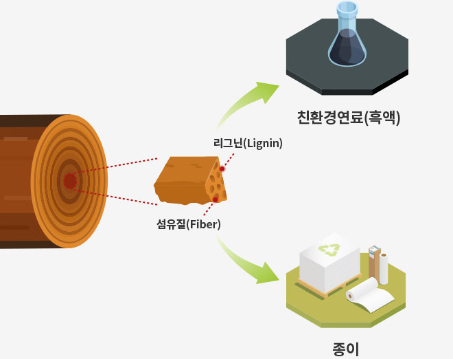
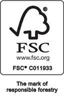
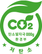
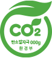
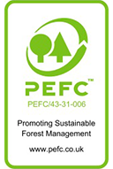
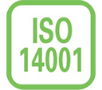
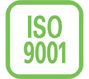

-
흑액 사용으로 인한 온실가스 감축량
연간 약 90만톤
-
에너지 비용 절감(LNG기준)
연간 약 1,860억 원
-
기름 한 방울 안쓰고 만든 에너지
기름 사용 X
무림의 일관화 공장에서 사용 중인 흑액이 에너지와 이산화탄소를

흑액을 이용하면
소 11,000,000 마리가
내뿜는 이산화탄소의 양을
배출하지 않아도 돼요!
무림은
흑액을 재활용한 저탄소 신재생 에너지로
Pulp/종이를 생산합니다.
종이의 원료가 되는 나무의 구성성분은 어떻게 이루어져 있을까요?
나무를 이루는 구성 성분은 크게 섬유질과 리그닌입니다. 섬유질은 나무의 절반 가량을 차지하는 종이의 주원료입니다. 우리가 김치 등을 찢어서 먹을 때 실처럼 가느다랗게 늘어지는 것을 볼 수 있는데, 그것이 바로 섬유질이라고 생각하면 됩니다. 화학 처리를 통해 리그닌 등의 성분을 제거하고 섬유질만 분리해서 인쇄용지 등 고급종이의 원료로 사용하는 것입니다. 리그닌은 흑액이라는 천연 친환경 연료로 사용되고 있습니다.
이 친환경 연료는 네오포레 뿐 아니라 종이를 만드는 에너지로 쓰여 환경을 보호하는 역할에 앞장서고 있습니다.

청정연료를 사용한 低탄소 종이
무림은 FSCⓇ, KFCC™ 인증을 비롯하여 다양한 환경 인증을 취득하였습니다.
또한 환경표지, 탄소발자국 및 저탄소 제품 인증을 통해 자원절약 및 오염물질 발생 저감을 실천하고 있으며, 지속적으로 국내외 친환경 제품 인증 및 보급 확대에 앞장서고 있습니다.
무림의 환경 인증 현황
-

FSCⓇ-CoC
무림페이퍼, 무림SP, 무림P&P는 세계적인 산림인증제도인 FSCⓇ종이의 원료가 되는 나무의 구성성분은 어떻게 이루어져 있을까요?
-

저탄소제품
무림P&P는 지난 2013년 국내 제지업계 최초로 저탄소제품 인증을 취득하며, 온실가스 감축 및 지구온난화 방지에 기여하고 있습니다.
-

탄소발자국
무림페이퍼가 탄소발자국 인증을 획득한 이후 무림 SP도 주요 제품에 대한 탄소발자국 인증을 획득하였습니다.
KFCC™무림페이퍼, 무림SP, 무림P&P는 지속가능하게 관리된 산림에서 생산된 원료, 재활용 원료 및 관리된 원료로 제품을 생산하고 있습니다.
PREPS무림페이퍼와 무림P&P는 영국출판협회로부터 종이제품의 펄프 원료의 출처를 파악해 회원사가 선택할 수 있는 종이제품 리스트를 표시하는 PREPS에서 인증을 획득했습니다.
- 
PEFC™무림페이퍼, 무림SP, 무림P&P는 지속 가능한 산림경영을 확산시키는 국제산림인증제도인 PEFC™ 인증을 받아 산림의 친환경적 제품을 생산하고 있습니다.
환경마크무림페이퍼와 무림 SP는 친환경 인증인 환경마크를 획득하였습니다.
- 
국제표준 환경관리시스템 ISO 14001무림페이퍼와 무림P&P는 ISO 14001 인증을 통해 국제 표준의 환경관리시스템을 갖추고 지속적인 환경개선을 이루어나가고 있습니다.
- 
국제표준 환경관리시스템 ISO 9001무림페이퍼, 무림SP, 무림P&P는 ISO 9001을 도입하여 국제적 표준에 맞는 품질경영시스템을 갖추고 있습니다.